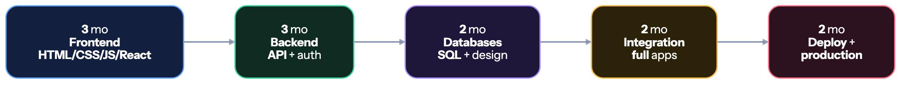

🧩 Full Stack Developer
You build the whole thing — UI, API, database, deployment. The most hired role for freshers in India.#
🏠 Home • 💼 All tracks • 🎨 Frontend • ⚙️ Backend
Why this is the default recommendation#
If you have no idea what to pick, pick this.
- Most fresher openings — especially at startups, which hire the most tier-3 students
- You discover your real preference by actually doing both ends
- Best for solo projects — you can build and ship a complete product alone, which is the strongest possible portfolio
- Easy to specialise later — after a year of full stack you'll know whether you're a frontend or backend person, and switching is trivial from here
Hardest part: the breadth trap. Knowing a little of everything and enough of nothing is the #1 way full-stack developers fail interviews.
Warning
The breadth trap is real. "I know React, Node, MongoDB, Express, Python, Django, Flutter, AWS" reads as "I did a tutorial in each." Go deep in ONE stack. Depth in MERN beats surface knowledge of six ecosystems, every single time.
Pick your stack (ONE)#
| Stack | Components | Best for |
|---|---|---|
| MERN ⭐ | MongoDB · Express · React · Node | Startups, fastest to build with, one language everywhere |
| PERN | PostgreSQL · Express · React · Node | Same but with a real relational DB (better for interviews) |
| Java Full Stack ⭐ | Spring Boot · React · MySQL/PostgreSQL | Service companies, enterprise, most Indian job openings |
| Next.js Full Stack | Next.js · Prisma · PostgreSQL | Modern, fewest moving parts, excellent for solo projects |
| Python Full Stack | Django/FastAPI · React · PostgreSQL | If you also lean toward data/ML |
Tip
Two safest picks: Java + Spring Boot + React if you want maximum job openings in India (service + enterprise + product). MERN/Next.js if you're targeting startups and want to ship fast. Pick one, stay 12 months.
The roadmap#

Phase 1 — Frontend (3 months)#
- HTML — semantic tags, forms, accessibility basics
- CSS — Flexbox, Grid, responsive design, Tailwind
- JavaScript deeply — DOM, events, async/await, fetch, closures,
this, event loop - React — components, hooks, state, routing, forms, data fetching
- State management — Context or Zustand
- Loading states, error handling, form validation
📖 Full detail: frontend.md (follow phases 1–3)
Phase 2 — Backend (3 months)#
- Your backend language + framework
- REST API design, HTTP methods, status codes
- MVC / layered architecture
- Authentication — JWT, password hashing (bcrypt), refresh tokens
- Authorisation and role-based access
- Middleware, validation, structured error responses
- File uploads (Multer / S3 / Cloudinary)
- Environment variables and secrets
- API docs with Swagger/Postman
📖 Full detail: backend.md (follow phases 1–2)
Phase 3 — Databases (2 months)#
- SQL — schema design, joins, group by, subqueries, indexing, transactions
- Normalisation and when to denormalise
- MongoDB — documents, aggregation (if MERN)
- ORM — Prisma / Mongoose / Hibernate / SQLAlchemy
- Relationships — one-to-many, many-to-many
- Redis — caching and sessions
- Database migrations
Phase 4 — Putting it together (2 months)#
This is where you become a full stack developer rather than two half-developers.
- Connect a React frontend to your own API
- Handle CORS properly
- Full auth flow — signup → login → protected routes → logout → token refresh
- Global loading and error states
- Pagination, search and filtering — end to end
- Real-time features with WebSockets (Socket.io)
- Payment integration (Razorpay/Stripe test mode)
- Email notifications (Nodemailer / SendGrid)
- Image uploads end to end
Phase 5 — Production (2 months)#
- Git workflows — branches, PRs, resolving merge conflicts
- Docker — containerise your app,
docker-compose - Deployment — frontend on Vercel/Netlify, backend on Render/Railway/EC2, DB on Neon/Supabase/Atlas
- Environment configuration across environments
- CI/CD with GitHub Actions
- Custom domain + HTTPS
- Basic monitoring and error tracking (Sentry)
- Security — OWASP basics, rate limiting, input sanitisation
- Testing — a few unit and integration tests (rare among freshers, very noticeable)
💡 Projects that get you hired#
You need 2–3 complete, deployed, defensible applications.
| Level | Project | Key features |
|---|---|---|
| 🟢 | Blog platform | Auth, CRUD, markdown, comments, image upload |
| 🟡 | E-commerce store | Products, cart, checkout, payments, orders, admin panel |
| 🟡 | Job board | Two user roles, applications, search + filters, resume upload |
| 🟠 | Real-time chat | Socket.io, rooms, online presence, message history, typing indicators |
| 🟠 | Project management tool | Boards, drag-and-drop, teams, permissions, activity feed |
| 🔥 | SaaS with subscriptions | Multi-tenant, Razorpay/Stripe billing, usage limits, admin dashboard |
| 🔥 | Social platform | Feed, follows, notifications, real-time updates, image CDN |
A full-stack project must have all of this:
- ✅ Live deployed URL (frontend AND backend)
- ✅ GitHub repo with a strong README — screenshots, architecture diagram, live link, setup steps
- ✅ Authentication with proper password hashing
- ✅ A real database with a considered schema
- ✅ Responsive UI that actually looks good
- ✅ Error handling and loading states
- ✅ 30+ commits spread over weeks, not one "final commit"
🎤 Interview breakdown#
| Round | What's tested |
|---|---|
| OA | DSA — arrays, strings, hashmaps, trees, basic DP |
| DSA round | Live coding, Medium difficulty |
| Frontend round | React hooks, JS fundamentals, CSS, machine coding a component |
| Backend round | API design, auth, database design, SQL queries |
| Project deep-dive ⭐ | The most important round for full stack. Architecture, trade-offs, bugs, scale |
| System design | Design a URL shortener / chat app / e-commerce backend |
| HR | Motivation, teamwork, why this company |
❓ Full-stack questions you WILL be asked
- Walk me through what happens when a user clicks "Login" in your app — browser to database and back.
- How did you implement authentication? Where is the JWT stored and what are the trade-offs?
- What happens if your database goes down? What does the user see?
- How would you handle 10,000 concurrent users on this?
- Why did you choose MongoDB over PostgreSQL (or vice versa)?
- How do you prevent SQL injection / XSS / CSRF?
- What is CORS and why did you have to configure it?
- How does your frontend handle a failed API call?
- What was the hardest bug in this project? How did you find it?
- What would you refactor if you rebuilt it today?
- How do you handle file uploads at scale?
- Explain your database schema and why you modelled it that way.
Question 1 is the classic full-stack question. Rehearse it out loud until it's fluent — it demonstrates that you understand the whole system, which is the entire point of the role.
🏢 Who hires full stack developers#
| Level | Companies | CTC |
|---|---|---|
| 🟢 Service | TCS, Infosys, Wipro, Cognizant, Accenture, LTIMindtree, Capgemini | ₹3.5–7 LPA |
| 🔵 Mid product & startups | Zoho, Nagarro, Thoughtworks, Publicis Sapient, most funded startups | ₹6–15 LPA |
| 🟣 Strong product | Razorpay, Zomato, Swiggy, PhonePe, Groww, CRED, Postman, Zeta | ₹15–30 LPA |
| 🔴 Top tier | Usually hire specialists rather than "full stack" titles | ₹25–60 LPA |
Tip
Startups are the tier-3 student's best market, and they overwhelmingly hire full stack. A 15-person startup needs someone who can ship a whole feature alone — they care about what you've built, not where you studied. Target them hard. → placements/off-campus-strategy.md
📚 Free resources#
| Topic | Resource |
|---|---|
| Full MERN course | Chai aur Code (Hitesh Choudhary) · The Net Ninja MERN |
| Java Full Stack | Telusko + react.dev |
| The full path | roadmap.sh/full-stack |
| JavaScript deep | javascript.info |
| React | react.dev/learn |
| Next.js | nextjs.org/learn |
| Databases | SQLZoo · Prisma docs |
| Deployment | Vercel · Render · Railway |
| Free DB hosting | Neon · Supabase · MongoDB Atlas |
⚠️ Full-stack specific mistakes#
| Mistake | Fix |
|---|---|
| Breadth without depth | One stack, 12 months. Resist the urge to sample. |
| Listing 15 technologies on your resume | List 5–6 you can be interviewed on. Every listed skill is fair game. |
| Only building CRUD apps | Add real-time, payments, caching, or file handling. Show engineering. |
| Frontend deployed, backend on localhost | Deploy both. A dead demo link is worse than no link. |
| Weak on DSA because "I build projects" | Projects get you the interview. DSA gets you through it. You need both. |
| Can't explain the full request lifecycle | Practise the "click to database and back" walkthrough out loud. |
| No database design thinking | Learn normalisation. Bad schemas get picked apart in interviews. |
| Chasing every new framework | The stack you know is fine. Depth compounds; novelty doesn't. |
One person, whole product. That's the most employable thing a fresher can be.#
🏠 Home • 💼 Tracks • 💡 Projects • 📚 DSA • 📤 Off-campus